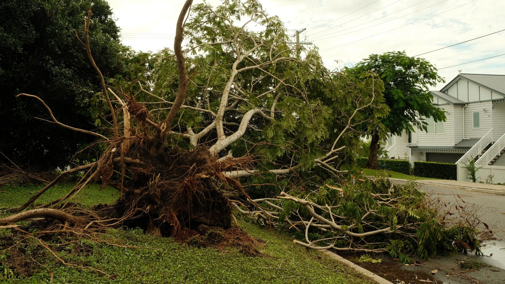

Santa Catarina · Clima
Santa Catarina · ClimaTemporal com granizo segue até terça em Santa Catarina, e o litoral deve receber de 100 a 150 milímetros
O aviso que veio antes do estrago, com a previsão região por região.
O balanço saiu neste domingo pelo Governo de Santa Catarina. Bom Jesus, Quilombo, Ipuaçu, Biguaçu e Florianópolis decretaram situação de emergência, e a Defesa Civil manteve o aviso de temporal com granizo e vendaval até a madrugada de 1º de setembro.
Em 30 segundos · Modo de Leitura, formato original Santa Informa
O temporal deste fim de semana deixou danos em 23 municípios de Santa Catarina.
Cinco decretaram situação de emergência: Bom Jesus, Quilombo, Ipuaçu, Biguaçu e Florianópolis.
Já passa de mil residências danificadas no estado.
Só em Florianópolis são cerca de 600 casas, e em Biguaçu perto de 250.
No Oeste, Ipuaçu contou 210, Bom Jesus 81 e Entre Rios 80.
Aqui perto, Porto Belo teve alagamento pontual em via pública, com chuva forte e vento.
A Defesa Civil do estado manteve o aviso até a madrugada de terça-feira, 1º de setembro.
Para o Litoral Norte, onde ficam Itapema e a Costa Esmeralda, a previsão agora é de 50 a 90 milímetros.
No Vale do Itajaí a faixa é de 100 a 150 milímetros.
No Oeste, no Litoral Sul e na Grande Florianópolis pode chegar a 200 milímetros.
Santa CatarinaPublicada em Redação Santa Informa

A chuva que a Defesa Civil vinha anunciando desde a semana passada chegou e cobrou o preço. O Governo de Santa Catarina divulgou neste domingo, 30, que 23 municípios já registraram danos por causa dos temporais com granizo e vendaval. Somadas, passam de mil as residências atingidas no estado. Cinco cidades decretaram situação de emergência: Bom Jesus, Quilombo, Ipuaçu, Biguaçu e Florianópolis.
O maior número está na Grande Florianópolis. A capital contabilizou cerca de 600 casas danificadas, e Biguaçu chegou perto de 250. No Oeste, onde o granizo caiu com força, Ipuaçu registrou 210 residências, Bom Jesus 81, Entre Rios 80, Quilombo 32 e Ouro Verde 23. No Sul do estado, Jacinto Machado contou 3. Na região de Joaçaba, os municípios de Joaçaba, Ouro, Luzerna e Lacerdópolis também tiveram queda de granizo e seguem levantando o tamanho do estrago.
No Litoral Norte, quem apareceu no balanço foi Porto Belo. Segundo o Governo do Estado, a chuva intensa com ventos fortes provocou alagamentos pontuais em vias públicas na cidade. Itapema não está na lista divulgada neste domingo. A Defesa Civil municipal já tinha avisado na quinta-feira passada que o fim de semana viria com chuva forte na cidade.
A Secretaria de Estado da Proteção e Defesa Civil emitiu no domingo, às 11h, o aviso hidrometeorológico especial nº 153/2026. Ele vale até a madrugada de terça-feira, 1º de setembro, e prevê mais temporal com granizo, vendaval e chuva volumosa. Os acumulados esperados são de 150 a 200 milímetros no Oeste, no Meio-Oeste, no Planalto Sul, no Litoral Sul e na Grande Florianópolis, de 100 a 150 milímetros no Extremo Oeste e no Vale do Itajaí, e de 50 a 90 milímetros nas demais regiões, faixa que inclui o Litoral Norte. O aviso lista risco de destelhamento, dano na rede elétrica, queda de árvore e de galho, alagamento, enxurrada, deslizamento em área suscetível e rio subindo acima do leito.
As orientações são conhecidas, e é justamente por isso que costumam passar batido. Fique atento às encostas e observe qualquer sinal de instabilidade. Procure abrigo seguro enquanto o temporal passa, longe de árvore e de poste. Não atravesse rua, ponte ou pontilhão alagado. Tire do quintal o que o vento pode carregar e mantenha a drenagem limpa. Os alertas do estado saem por SMS no 40199 e por WhatsApp no (61) 2034-4611, e o telefone da Defesa Civil estadual é o (48) 3665-2000.
O resumo de 30 segundos está no topo e a versão completa é o texto acima. Aqui ficam as três leituras da casa sobre o mesmo assunto.
Clara, a otimista
Vinte e três cidades com estrago é notícia ruim, não tem como enfeitar. Mas tem um lado que merece ser dito em voz alta: o aviso saiu antes. A Defesa Civil vinha falando em temporal desde a semana passada, com região por região e faixa de milímetro. Quem prendeu a lona, recolheu o vaso da sacada e adiou a viagem agiu com informação na mão, e isso é um avanço enorme perto do que era há dez anos.
E o decreto de situação de emergência existe para isso mesmo, para a cidade poder correr atrás de ajuda sem ficar presa na fila comum. Cinco prefeituras assinaram no mesmo fim de semana. É burocracia, sim, mas é burocracia que vira telha nova em cima da casa de alguém.
Seu Prudêncio, o criterioso
Merece atenção o fato de o número ser parcial. Quatro municípios ainda estavam contando os danos quando o balanço saiu, e a experiência mostra que essa conta sobe nos dias seguintes. Quem for comparar o estrago deste fim de semana com o de outros anos deve esperar o levantamento fechar.
Vale acompanhar também o que acontece depois do temporal, que costuma render menos manchete e mais dor de cabeça. Uma sugestão útil para quem teve telhado danificado: fotografe antes de mexer, guarde a nota do material e procure a Defesa Civil do seu município para registrar a ocorrência. Sem registro, a casa não entra na estatística, e o que não entra na estatística não entra no pedido de recurso.
É justo reconhecer a qualidade do aviso do estado. Ele separa a previsão por região, dá faixa de milímetro em vez de adjetivo e diz até quando vale. Isso é informação que dá para usar, e não recado genérico de que vai chover.
Caco, o sarcástico
Santa Catarina é aquele estado onde a previsão do tempo tem mais reviravolta que novela das nove. Na quinta o litoral ia levar de 100 a 150 milímetros. No domingo virou de 50 a 90. Semana que vem descobrimos que era neve.
Granizo no Oeste, alagamento em Porto Belo, vendaval na capital. Faltou o meteorologista avisar que este fim de semana era um pacote turístico completo pelas regiões do estado.
E o mais catarinense de tudo: o aviso vale até a madrugada de terça. Ou seja, a segunda-feira está oficialmente autorizada a ser segunda-feira.
Fontes: Governo de Santa Catarina, texto publicado em 30 de agosto de 2026, às 10h54, com apuração da Secretaria de Estado da Proteção e Defesa Civil, de onde saem os 23 municípios com danos, os cinco decretos de situação de emergência, o total de mais de mil residências atingidas, os números por cidade, o registro de alagamento em Porto Belo, as orientações à população e os canais de alerta. E o Aviso Hidrometeorológico Especial nº 153/2026, da Defesa Civil de Santa Catarina, emitido em 30 de agosto às 11h, de onde saem a validade até a madrugada de 1º de setembro, os acumulados por região e a lista de riscos. A imagem do topo é ilustrativa, de banco gratuito, e não retrata nenhum dos casos citados.
Santa Catarina · ClimaO aviso que veio antes do estrago, com a previsão região por região.
 Itapema · Clima
Itapema · ClimaO aviso que a Defesa Civil de Itapema deu na quinta-feira.
 Itapema · Meio Ambiente
Itapema · Meio AmbienteO que a região está montando para medir a chuva que vem por aí.